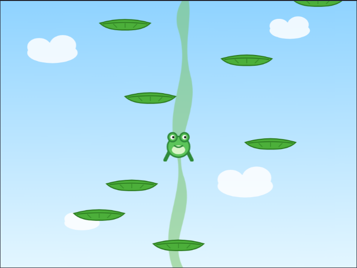
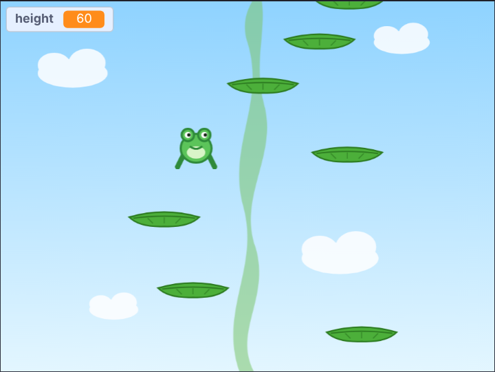
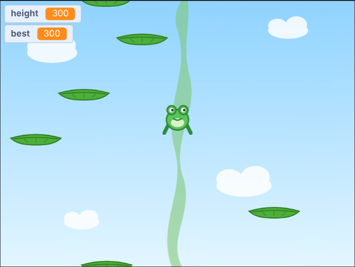
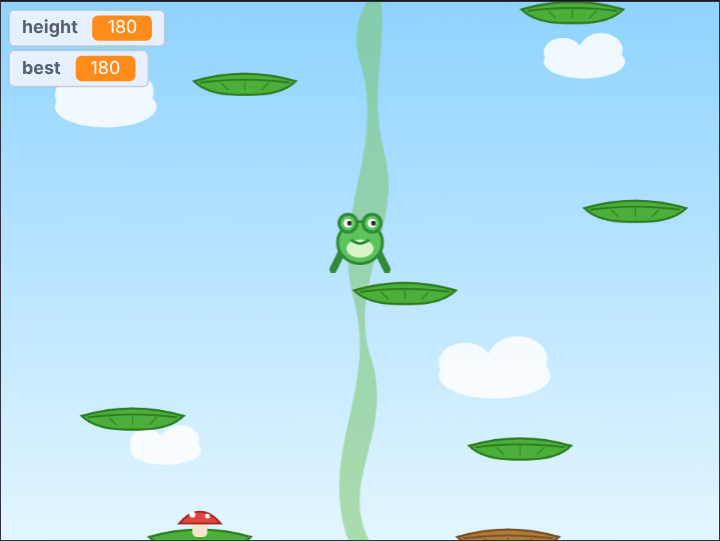
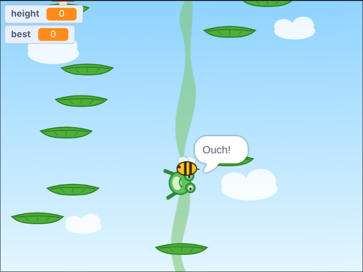

<title>Beanstalk Bounce Tutorial</title>
<meta name="claude:viewport-fit-sides" content="cover">
<link rel="preconnect" href="https://fonts.googleapis.com">
<link rel="stylesheet" href="https://fonts.googleapis.com/css2?family=Fredoka:wght@500;600&family=Atkinson+Hyperlegible:ital,wght@0,400;0,700;1,400&family=JetBrains+Mono:wght@400&display=swap">
<style>
/* Layout: one reading column; each step is a numbered section: the big idea, the blocks, a picture and a checkpoint file. */
:root {
  --bg: #f4f3fa; --surface: #ffffff; --fg: #1f1d33; --muted: #5c5a74; --line: #dddbea;
  --accent: #2f7d32; --accent-soft: #e3f3df; --drone: #c2410c; --code-bg: #f8f7fd;
  --display: "Fredoka", "Trebuchet MS", system-ui, sans-serif;
  --body: "Atkinson Hyperlegible", "Segoe UI", system-ui, sans-serif;
  --mono: "JetBrains Mono", ui-monospace, Consolas, monospace;
}
@media (prefers-color-scheme: dark) { :root:not([data-theme="light"]) {
  --bg: #13121f; --surface: #1c1a2c; --fg: #ebe9f7; --muted: #a6a3bf; --line: #312e47;
  --accent: #8fd88f; --accent-soft: #1f3320; --drone: #f2a065; --code-bg: #232036; color-scheme: dark; } }
:root[data-theme="dark"] {
  --bg: #13121f; --surface: #1c1a2c; --fg: #ebe9f7; --muted: #a6a3bf; --line: #312e47;
  --accent: #8fd88f; --accent-soft: #1f3320; --drone: #f2a065; --code-bg: #232036; color-scheme: dark; }

body { background: var(--bg); color: var(--fg); font: 18px/1.6 var(--body);
  padding-left: max(16px, env(safe-area-inset-left, 0px)); padding-right: max(16px, env(safe-area-inset-right, 0px)); padding-block: 40px 72px; }
main { max-width: 760px; margin: 0 auto; display: grid; gap: 48px; }
main > *, .step > *, .stack > *, .intro > * { min-width: 0; }
h1, h2, h3 { font-family: var(--display); font-weight: 600; text-wrap: balance; margin: 0; line-height: 1.15; }
h1 { font-size: clamp(2rem, 6vw, 2.9rem); }
h2 { font-size: 1.7rem; }
h3 { font-size: 1.15rem; font-weight: 500; }
p { margin: 0; max-width: 66ch; }
a { color: var(--accent); }
code { font: 0.88em var(--mono); background: var(--code-bg); padding: 1px 5px; border-radius: 4px; overflow-wrap: anywhere; }
.eyebrow { font: 600 0.78rem var(--body); letter-spacing: 0.08em; text-transform: uppercase; color: var(--drone); }
.stack { display: grid; gap: 16px; min-width: 0; }
.intro { display: grid; gap: 14px; }
.intro p { color: var(--muted); font-size: 1.08rem; }

.plan { list-style: none; margin: 0; padding: 0; display: grid; gap: 6px; counter-reset: plan; }
.plan li { display: flex; flex-wrap: wrap; align-items: baseline; gap: 4px 12px; padding: 8px 12px; border-radius: 6px; counter-increment: plan; }
.plan li::before { content: counter(plan); font: 600 0.95rem var(--display); color: var(--muted); width: 1.4em; }
.plan .name { font-weight: 700; }
.plan a { text-decoration: none; }
.plan a:hover .name, .plan a:focus-visible .name { text-decoration: underline; }
.plan .what { color: var(--muted); flex: 1 1 220px; }

.step { display: grid; gap: 20px; border-top: 2px solid var(--line); padding-top: 32px; }
.step-head { display: flex; align-items: center; gap: 14px; }
.num { flex: none; width: 44px; height: 44px; border-radius: 50%; display: grid; place-items: center;
  background: var(--accent); color: var(--surface); font: 600 1.3rem var(--display); }
ol.do { margin: 0; padding-left: 1.3em; display: grid; gap: 8px; max-width: 66ch; }

.blocks-panel { background: var(--surface); border: 1px solid var(--line); border-radius: 8px; padding: 16px; overflow-x: auto; }
.blocks-panel .label { font: 700 0.78rem var(--body); letter-spacing: 0.06em; text-transform: uppercase; color: var(--muted); margin-bottom: 8px; }
pre.blocks { margin: 0; font: 13px var(--mono); white-space: pre; }

.note { border-left: 3px solid var(--drone); padding: 2px 0 2px 14px; color: var(--fg); }
.note b { color: var(--drone); }
figure { margin: 0; display: grid; gap: 8px; }
figure img { width: 100%; border-radius: 8px; border: 1px solid var(--line); display: block; }
figcaption { font-size: 0.9rem; color: var(--muted); }

.table-wrap { overflow-x: auto; }
table { border-collapse: collapse; font-variant-numeric: tabular-nums; min-width: 420px; }
th, td { text-align: right; padding: 6px 14px; border-bottom: 1px solid var(--line); }
th:first-child, td:first-child { text-align: left; }
th { font-size: 0.82rem; color: var(--muted); font-weight: 700; }

.checkpoint { display: flex; flex-wrap: wrap; align-items: center; gap: 10px 16px; background: var(--surface);
  border: 1px solid var(--line); border-radius: 8px; padding: 12px 16px; }
.checkpoint p { flex: 1 1 260px; color: var(--muted); font-size: 0.95rem; }
.btn { display: inline-block; font-weight: 700; text-decoration: none; color: var(--surface); background: var(--accent);
  padding: 8px 16px; border-radius: 6px; white-space: nowrap; }
.btn:hover, .btn:focus-visible { outline: 3px solid var(--accent-soft); outline-offset: 1px; }
.try { margin: 0; padding-left: 1.3em; display: grid; gap: 6px; }
svg.coords text { font: 11px var(--body); fill: var(--muted); }
.scripts { display: flex; flex-wrap: wrap; gap: 12px; align-items: flex-start; }
.scripts .blocks-panel { flex: 0 1 auto; max-width: 100%; min-width: 0; }
.tag { font-size: 0.7rem; font-weight: 700; letter-spacing: 0.04em; padding: 1px 7px; border-radius: 999px; margin-left: 6px; }
.tag.new { background: var(--accent); color: var(--surface); }
.tag.changed { border: 1px solid var(--drone); color: var(--drone); }
.flow { list-style: none; margin: 0; padding: 0; display: flex; flex-wrap: wrap; gap: 8px; counter-reset: none; }
.flow li { display: grid; gap: 2px; padding: 10px 14px; border-radius: 8px; background: var(--surface); border: 1px solid var(--line);
  flex: 1 1 130px; min-width: 0; position: relative; }
.flow li b { font: 600 1.05rem var(--display); color: var(--accent); }
.flow li span { font-size: 0.85rem; color: var(--muted); }
footer { color: var(--muted); font-size: 0.92rem; border-top: 2px solid var(--line); padding-top: 24px; }
.idea { background: var(--accent-soft); border-radius: 8px; padding: 12px 16px; display: grid; gap: 4px; max-width: 66ch; }
.make { display: grid; gap: 4px; max-width: 66ch; font-size: 0.95rem; }
.make b { color: var(--drone); }
.idea b { font: 600 1rem var(--display); color: var(--accent); }
</style>

<main>
  <header class="intro">
    <span class="eyebrow">Scratch tutorial for kids (9+) · 5 steps</span>
    <h1>Beanstalk Bounce</h1>
    <p>A frog bounces up a giant beanstalk, from leaf to leaf. The higher he gets, the further apart the leaves are, and the more tricks they have: moving leaves, crumbling leaves, springy mushrooms, and bees. How high can you climb?</p>
    <p>The whole game is about 150 lines of blocks. Every step is a game you can play, and every step has a file you can download if you get stuck. You need the Scratch editor: <a href="https://scratch.mit.edu/projects/editor/">scratch.mit.edu/projects/editor</a>.</p>
    <div class="checkpoint">
      <p>Start here: the starter project has the frog, the leaves, the bee and the sky. No code yet.</p>
      <a class="btn" href="https://github.com/AJosephsen/MyTemporaryJunk/raw/main/scratch/tutorials/beanstalk-bounce/starter.sb3">Download starter.sb3</a>
    </div>
  </header>

  <section class="stack" aria-label="Steps">
    <h3>The steps</h3>
    <ol class="plan">
      <li><a href="#step-1"><span class="name">Gravity and bounce</span></a><span class="what">Speed that changes every frame</span></li>
      <li><a href="#step-2"><span class="name">Climb forever</span></a><span class="what">A camera that follows the frog</span></li>
      <li><a href="#step-3"><span class="name">Level numbers</span></a><span class="what">Change the numbers, change the game</span></li>
      <li><a href="#step-4"><span class="name">Leaf kinds</span></a><span class="what">Tell things apart by colour</span></li>
      <li><a href="#step-5"><span class="name">Bees</span></a><span class="what">A danger that moves</span></li>
    </ol>
    <p class="note"><b>Tip:</b> the block pictures can't show the <b>Run without screen refresh</b> tick. Only <code>grow</code> needs it.</p>
  </section>

  <section class="step" id="step-1">
    <div class="step-head"><span class="num">1</span><h2>Gravity and bounce</h2></div>
    <div class="idea"><b>Big idea: speed that changes every frame</b><span>The frog has a speed going up, <b>vy</b>. Every frame gravity takes a little away (<b>change vy by -0.5</b>), and the frog moves up by <b>vy</b>. So he slows down, stops, and falls faster and faster. When he lands on a leaf, <b>vy</b> becomes 11 again: a bounce!</span></div>
    <p class="make"><span><b>Make:</b> variables <code>fx</code>, <code>fy</code>, <code>vy</code>, <code>nextY</code> and <code>phase</code> (for all sprites); on the <b>Leaf</b> sprite <code>isClone</code> and <code>wy</code> <b>for this sprite only</b>; messages <code>clear</code> and <code>tick</code>; the block <code>grow</code> with <b>Run without screen refresh</b> ticked.</span></p>
    <!--changed:1-->
    <ul class="do">
      <li>The frog only bounces when he is <b>falling</b> (vy &lt; 0). On the way up he jumps right through the leaves.</li>
      <li>Off the right side, back on the left: if <b>fx</b> is more than 240, take 480 away.</li>
      <li><b>grow</b> puts leaves 40 to 70 steps apart until the screen is full. Each clone keeps its own height <b>wy</b>.</li>
    </ul>
    <figure>
      
      <figcaption>Use the arrow keys to hop from leaf to leaf.</figcaption>
    </figure>
    <div class="checkpoint">
      <p>Stuck? This is the project at the end of step 1.</p>
      <a class="btn" href="https://github.com/AJosephsen/MyTemporaryJunk/raw/main/scratch/tutorials/beanstalk-bounce/step1.sb3">Download step1.sb3</a>
    </div>
  </section>

  <section class="step" id="step-2">
    <div class="step-head"><span class="num">2</span><h2>Climb forever</h2></div>
    <div class="idea"><b>Big idea: a camera that follows the frog</b><span>Every leaf keeps its own height, <b>wy</b>, and so does the frog, <b>fy</b>. A <b>camera</b> follows the frog up, and everything is drawn at <b>height − camera</b>. The camera never goes down, so if you fall below the screen, the game is over.</span></div>
    <p class="make"><span><b>Make:</b> variables <code>camera</code> and <code>height</code>.</span></p>
    <!--changed:2-->
    <ul class="do">
      <li>Change every y to <b>height − camera</b>: in <b>grow</b>, in the Frog's <b>go to</b>, and in a new Leaf script that sets its y every tick.</li>
      <li>Leaves below the screen delete themselves, and <b>grow</b> keeps adding leaves above. That is how the beanstalk never ends.</li>
      <li><b>height</b> is the camera divided by 10, so it goes up as you climb.</li>
    </ul>
    <figure>
      
      <figcaption>Up, up and up. Don't fall!</figcaption>
    </figure>
    <div class="checkpoint">
      <p>Stuck? This is the project at the end of step 2.</p>
      <a class="btn" href="https://github.com/AJosephsen/MyTemporaryJunk/raw/main/scratch/tutorials/beanstalk-bounce/step2.sb3">Download step2.sb3</a>
    </div>
  </section>

  <section class="step" id="step-3">
    <div class="step-head"><span class="num">3</span><h2>Level numbers</h2></div>
    <div class="idea"><b>Big idea: change the numbers, change the game</b><span>Instead of always 40 to 70 steps, the gap between leaves is a random number between <b>minGap</b> and <b>maxGap</b>, and the Stage makes both bigger as you climb. That's a parametric level: a few numbers decide how the whole level looks.</span></div>
    <p class="make"><span><b>Make:</b> variables <code>minGap</code>, <code>maxGap</code> and <code>best</code>.</span></p>
    <!--changed:3-->
    <ul class="do">
      <li><b>maxGap</b> stops at 105. The frog can jump 121 steps high (11 × 11 ÷ (2 × 0.5)), so the next leaf can always be reached.</li>
      <li>Try other numbers: what happens with <b>maxGap</b> 130? Or 30 + camera ÷ 20?</li>
      <li><b>best</b> is not reset by the green flag, so it remembers your highest climb.</li>
    </ul>
    <figure>
      
      <figcaption>At height 300 the leaves are much further apart.</figcaption>
    </figure>
    <div class="checkpoint">
      <p>Stuck? This is the project at the end of step 3.</p>
      <a class="btn" href="https://github.com/AJosephsen/MyTemporaryJunk/raw/main/scratch/tutorials/beanstalk-bounce/step3.sb3">Download step3.sb3</a>
    </div>
  </section>

  <section class="step" id="step-4">
    <div class="step-head"><span class="num">4</span><h2>Leaf kinds</h2></div>
    <div class="idea"><b>Big idea: tell things apart by colour</b><span>Some leaves move, some are dry and crumble, and some have a red mushroom that sends you flying. The chances also come from level numbers. The frog now checks <b>touching color</b> instead of <b>touching Leaf</b>: green bounces, red bounces high, brown doesn't hold.</span></div>
    <p class="make"><span><b>Make:</b> variables <code>moveChance</code> and <code>dryChance</code>; on the Leaf <code>dx</code> and <code>crumble</code> <b>for this sprite only</b>.</span></p>
    <!--changed:4-->
    <ul class="do">
      <li>Pick the colours with the eyedropper: click the colour box in <b>touching color</b>, then a leaf.</li>
      <li>A clone copies the costume, so <b>grow</b> switches the costume <b>before</b> it makes the clone.</li>
      <li>A dry leaf checks if the frog is falling onto it. Then it slides down and fades away.</li>
    </ul>
    <figure>
      
      <figcaption>Brown leaves crumble. Red mushrooms are springy!</figcaption>
    </figure>
    <div class="checkpoint">
      <p>Stuck? This is the project at the end of step 4.</p>
      <a class="btn" href="https://github.com/AJosephsen/MyTemporaryJunk/raw/main/scratch/tutorials/beanstalk-bounce/step4.sb3">Download step4.sb3</a>
    </div>
  </section>

  <section class="step" id="step-5">
    <div class="step-head"><span class="num">5</span><h2>Bees</h2></div>
    <div class="idea"><b>Big idea: a danger that moves</b><span>From height 150, <b>grow</b> sometimes asks for a bee between two leaves. The bee flies to and fro. If it touches the frog, he stops bouncing and tumbles down.</span></div>
    <p class="make"><span><b>Make:</b> on the <b>Bee</b> sprite (in the starter) <code>isClone</code>, <code>wy</code> and <code>dx</code> <b>for this sprite only</b>; variables <code>beeChance</code> and <code>beeY</code>; messages <code>bee</code> and <code>stung</code>.</span></p>
    <!--changed:5-->
    <ul class="do">
      <li>The bee scripts look just like the leaf scripts: a clone with its own height, moved by the camera.</li>
      <li>When stung, <b>phase</b> becomes <b>stung</b>: the frog spins and falls, and the game ends when he leaves the screen.</li>
      <li>This is the whole game!</li>
    </ul>
    <figure>
      
      <figcaption>Ouch! Watch out for bees.</figcaption>
    </figure>
    <div class="checkpoint">
      <p>Stuck? This is the project at the end of step 5.</p>
      <a class="btn" href="https://github.com/AJosephsen/MyTemporaryJunk/raw/main/scratch/tutorials/beanstalk-bounce/step5.sb3">Download step5.sb3</a>
    </div>
  </section>

  <section class="stack">
    <h3>Make it your own</h3>
    <ul class="try">
      <li>Make it easier or harder: change the numbers in the Stage's <b>forever</b> loop.</li>
      <li>Add coins on some leaves, and a <b>coins</b> score.</li>
      <li>Add a new leaf kind, for example a cloud that disappears after one bounce.</li>
      <li>Change the sky colour as you climb higher: switch backdrops at height 100, 200 and 300.</li>
    </ul>
  </section>

  <footer>Made with the Scratch workbench in this repository. The blocks on this page are drawn from the real project files, so they always match the downloads; the last step is the finished game.</footer>
</main>

<script src="https://cdn.jsdelivr.net/npm/scratchblocks@3.6.4/build/scratchblocks.min.js"></script>
<script>
  scratchblocks.renderMatching("pre.blocks", { style: "scratch3", languages: ["en"], scale: 0.75 });
</script>
